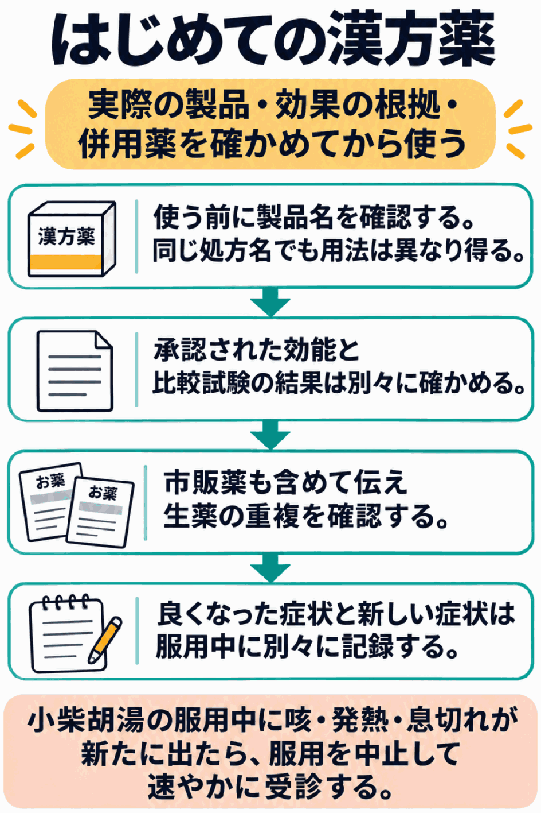

はじめての漢方薬
解説記事へ戻る

漢方薬を使う前に、実際の製品、試験で確かめられた効果、併用中の薬を確認します。
画像を原寸で開く
図の文章を読む（クリック／タップで開閉）
実際の製品・効果の根拠・併用薬を確かめてから使う。
使う前に製品名を確認する。同じ処方名でも用法は異なり得る。
承認された効能と比較試験の結果は別々に確かめる。
市販薬も含めて伝え、生薬の重複を確認する。
良くなった症状と新しい症状は服用中に別々に記録する。
小柴胡湯の服用中に咳・発熱・息切れが新たに出たら、服用を中止して速やかに受診する。
処方薬と市販薬を使うときは、箱やお薬手帳を見せて、生薬が重複していないか薬剤師に確認します。
画像を原寸で開く
服用を始めた日と、新しい症状が出た日をメモしておくと、診察で経過を伝えやすくなります。
画像を原寸で開く